1. ログインする
 1
1- 上のURLを開きます（ブックマークしておくと便利です）。
- 1「Googleアカウントでログイン」を押し、ご案内したメールアドレスの Googleアカウントを選びます。
- はじめてログインしたときは、管理者が利用を許可すると使えるようになります。
別のGoogleアカウントでログインすると「権限がありません」と出ます。その場合は一度ログアウトして、ご案内したアカウントでログインし直してください。
※ このガイドの画面はテスト用のデータです。実際の画面では、ご担当のメディアの数値が表示されます。
※ 画面の各ページにある「マニュアル」ボタンから、くわしい説明も読めます。
1別のGoogleアカウントでログインすると「権限がありません」と出ます。その場合は一度ログアウトして、ご案内したアカウントでログインし直してください。
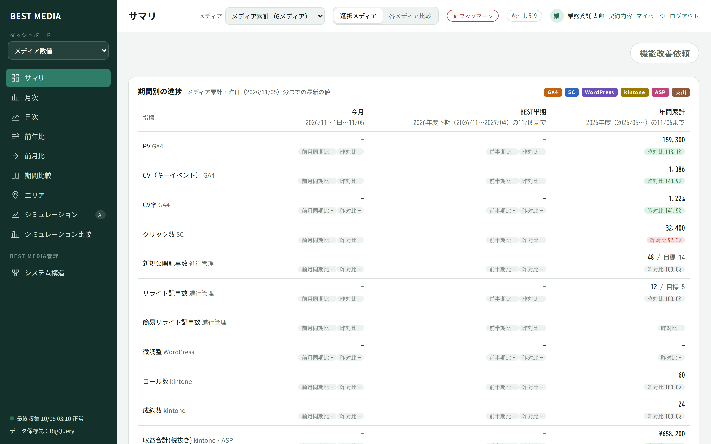
12345表示されるのは、ご担当（契約）のメディアの分だけです。
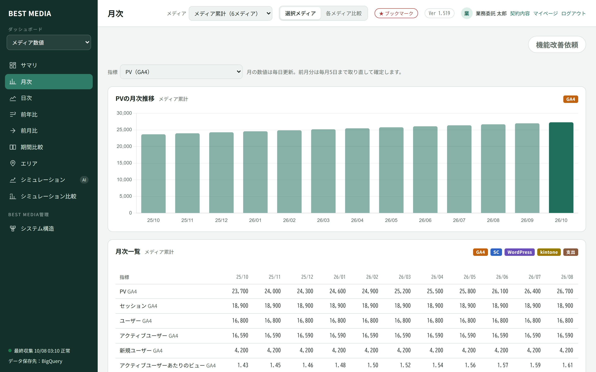
| サマリ | PV・CV・記事数・コール数・成約数などを、今月／BEST半期／年間で比べます。緑は前年より良い、赤は下がっている数字です。 |
|---|---|
| 月次・日次・前年比・前月比・期間比較 | 見たい期間や比べ方で数値を確かめます。右上で「各メディア比較」にすると、メディアを並べて比べられます。 |
| エリア | どの地域から見られているかを見ます。 |
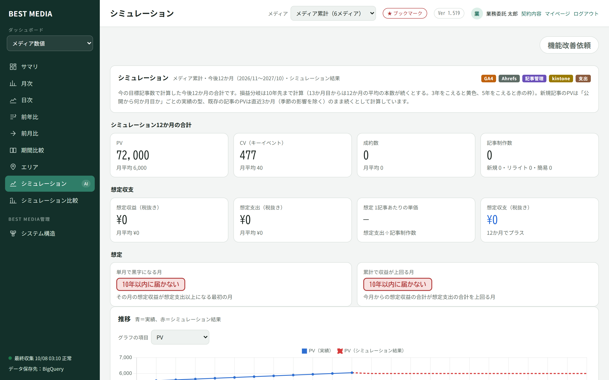
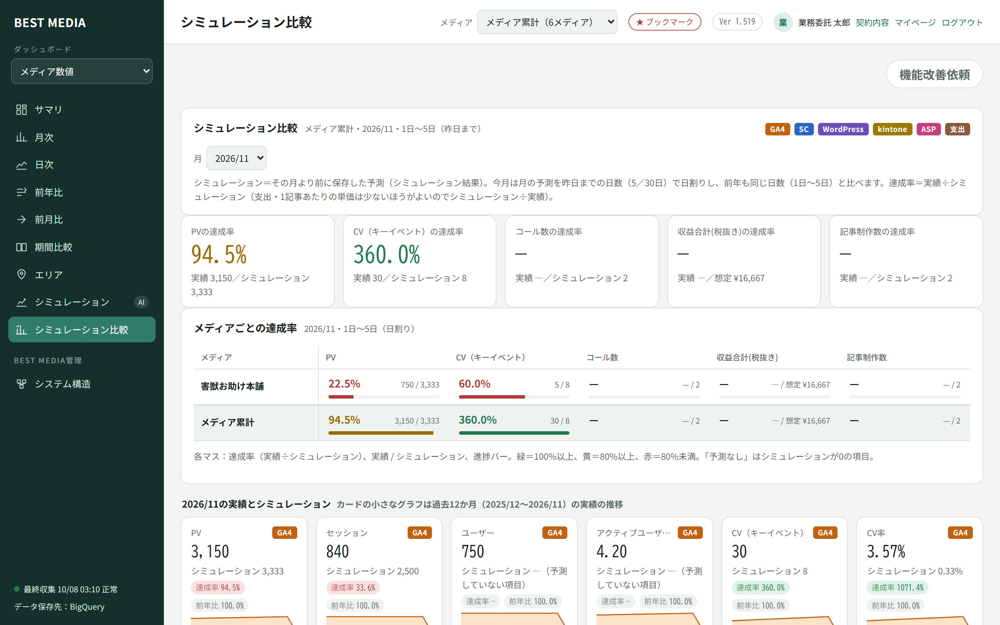
| シミュレーション | 記事目標の本数どおりに記事を作ったときの、今後12か月の PV・CV・成約数・収支の見込みです。「単月で黒字になる月」「累計で収益が上回る月」もわかります。 |
|---|---|
| シミュレーション比較 | 見込み（シミュレーション）に対して、実績がどこまで届いたかを月ごとに色で見ます。 |
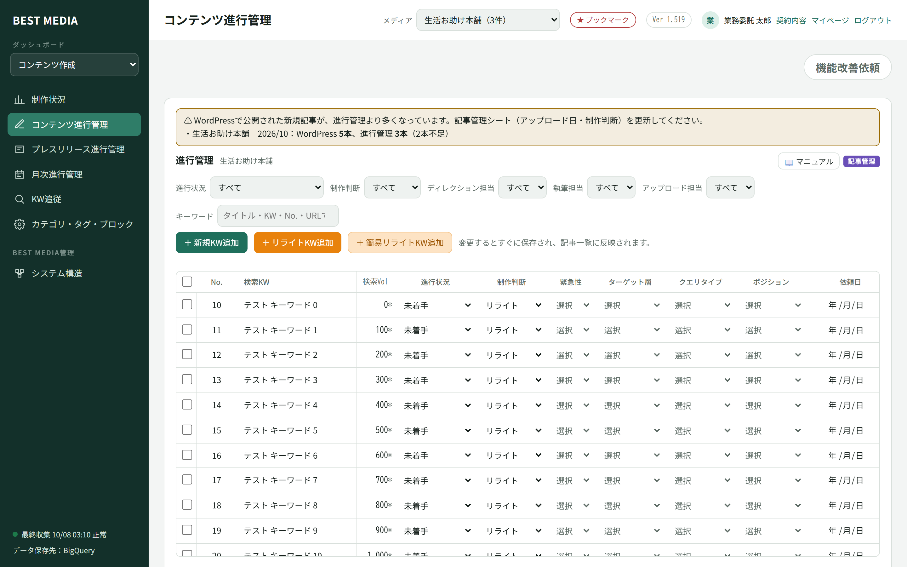
1234上の絞り込み（進行状況・担当など）とキーワードで、記事をしぼれます。見出しを押すと並び替えられます。
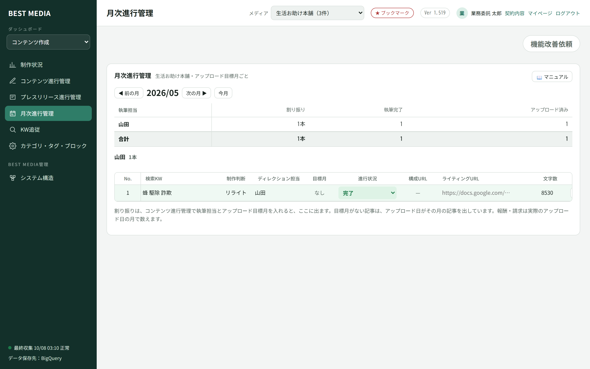
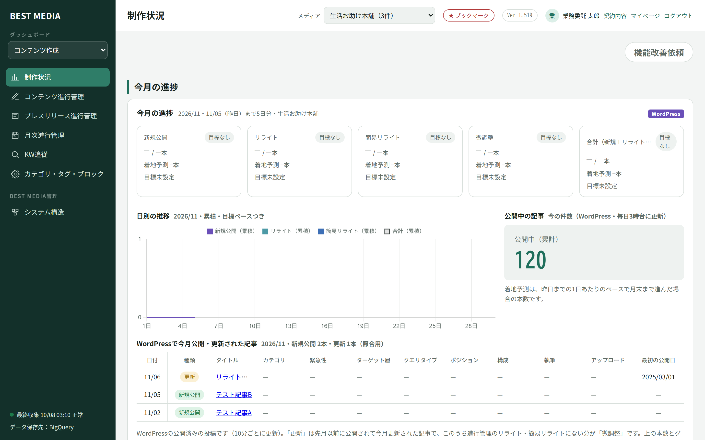
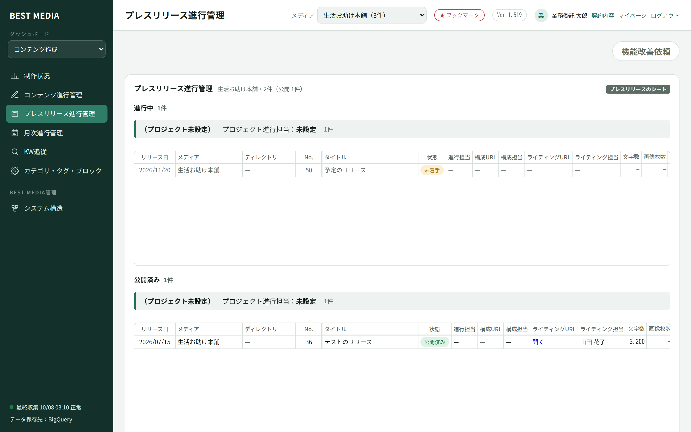
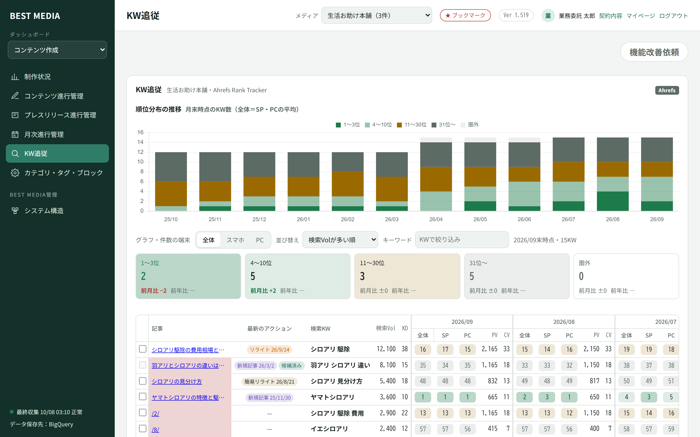
| 制作状況 | 月ごとの記事の本数と、記事目標に対する進み具合です。 |
|---|---|
| プレスリリース進行管理 | 担当メディアのプレスリリースの予定と状態を見られます（入力は BEST の担当者が行います）。 |
| KW追従 | 記事のKWの検索順位の動きを見ます。 |
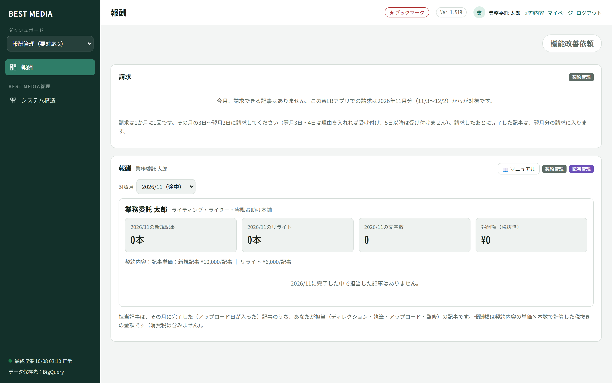
請求の状態は「請求確認中 → 経理部確認中 → 請求完了」と進みます。差し戻しになったときは、理由を確かめて直してから出し直してください。
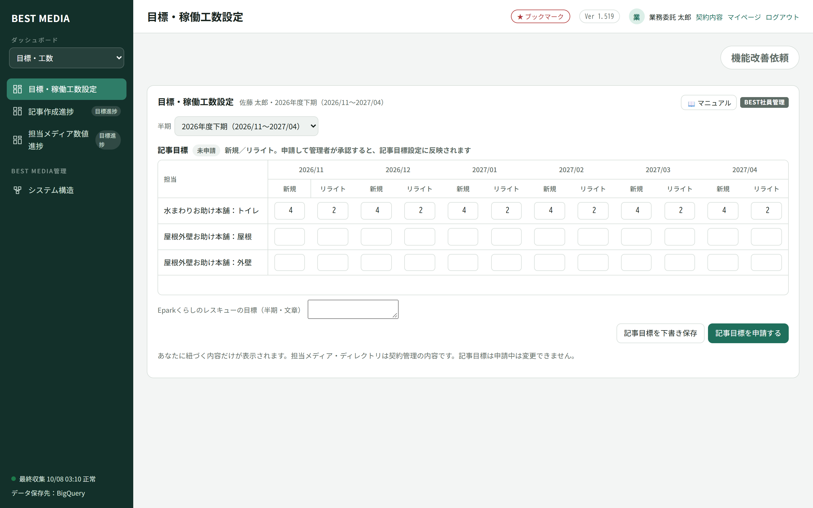
「記事作成進捗」で記事目標に対する本数を、「担当メディア数値進捗」で担当メディアの数値の進み具合を見られます。
| ログインできない | ご案内したメールアドレスの Googleアカウントでログインしているか確かめてください。それでも入れないときは、BEST の担当者にご連絡ください。 |
|---|---|
| 担当のメディアが出ない | 担当（契約）の登録が終わっていない可能性があります。BEST の担当者にご連絡ください。 |
| 使い方がわからない | 各画面の「マニュアル」ボタンから、くわしい説明を読めます。 |
| こうしてほしい・おかしい | 画面右上の「機能改善依頼」から送ってください。どの画面からの依頼かも一緒に届きます。 |
※ 画面はよりよくするために少しずつ変わります。最新の画面と違うところがあれば、画面の表示を優先してください。